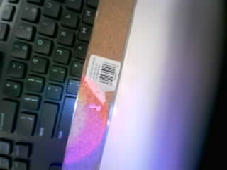

Frame 26: WAITING_FOR_GROWTH | 16.333% changed area | growth 0% across 1 frames
Original JPEG · MeasurementsFrame 27: WAITING_FOR_GROWTH | 16.312% changed area | growth 0% across 2 frames
Original JPEG · MeasurementsFrame 28: WAITING_FOR_GROWTH | 16.354% changed area | growth 0% across 3 frames
Original JPEG · MeasurementsFrame 29: WAITING_FOR_GROWTH | 16.333% changed area | growth 0% across 4 frames
Original JPEG · MeasurementsFrame 30: WAITING_FOR_GROWTH | 16.375% changed area | growth 0% across 5 frames
Original JPEG · MeasurementsFrame 31: WAITING_FOR_GROWTH | 16.354% changed area | growth 0% across 5 frames
Original JPEG · MeasurementsFrame 32: WAITING_FOR_GROWTH | 16.312% changed area | growth 0% across 5 frames
Original JPEG · Measurements
Frame 33: WAITING_FOR_GROWTH | 16.312% changed area | growth 0% across 5 frames
Original JPEG · MeasurementsFrame 34: WAITING_FOR_GROWTH | 16.312% changed area | growth 0% across 5 frames
Original JPEG · MeasurementsFrame 35: WAITING_FOR_GROWTH | 16.250% changed area | growth 0% across 5 frames
Original JPEG · Measurements